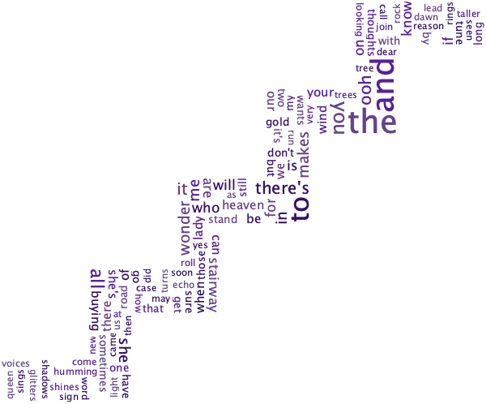

Lyrics : Stairway to Heaven

I used the Kumo Library to construct a word cloud in the shape of a stairway for the lyrics of Stairway to Heaven by Led Zeppelin. I used the .jar version of the Kumo Library to import it to Eclipse and used the library's functions to create the image.
The image was also generatable using Command Line Interface by installing Kumo using brew. However, the CLI was limited to a black background, and only produced this image.
command used to generate word cloud through terminal:
kumo --input "lyrics.txt" --output "stairway_failed.png" --color "(102,51,153),(178,140,217),(227,190,240)" --width 600 --height 498 --background "stairs.png" --collision pixel_perfect --font-type "Calibri"